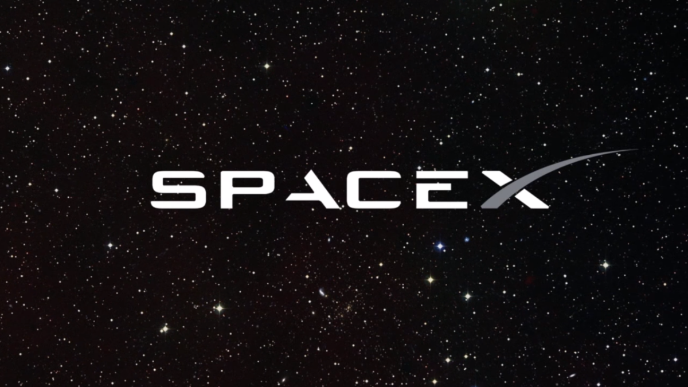

fan page
"Space Exploration Technologies Corp. (SpaceX) is an American spacecraft manufacturer, launcher, and a satellite communications corporation headquartered in Hawthorne, California. It was founded in 2002 by Elon Musk with the stated goal of reducing space transportation costs to enable the colonization of Mars." According to wikipedia
Elon Musk founder of spaceX, tesla, neuralink, open ai, and many other companies is an extremely successful indivisual being arguably one of the worlds most famous billionaires going on to own twitter aswell
